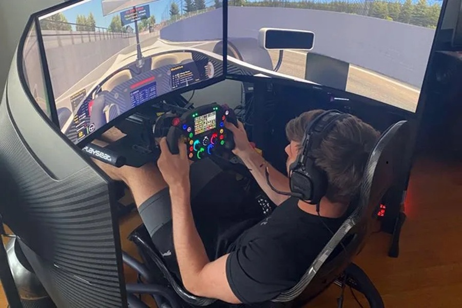
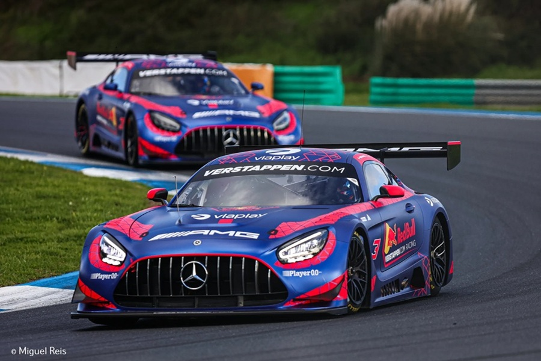
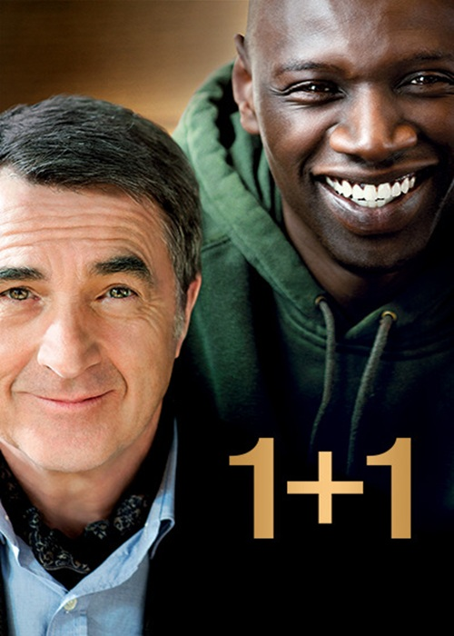
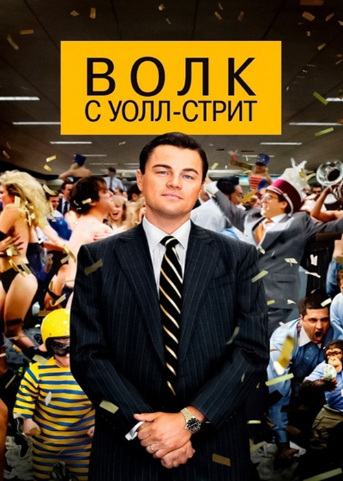
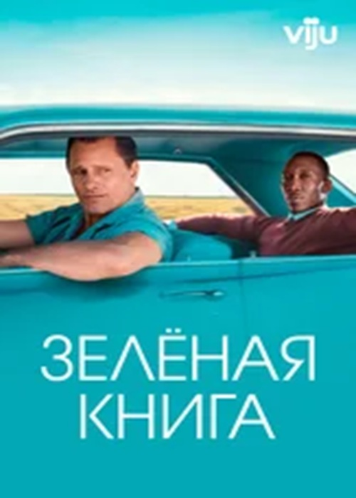
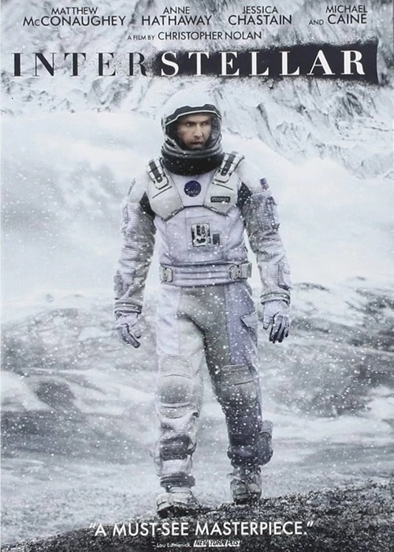
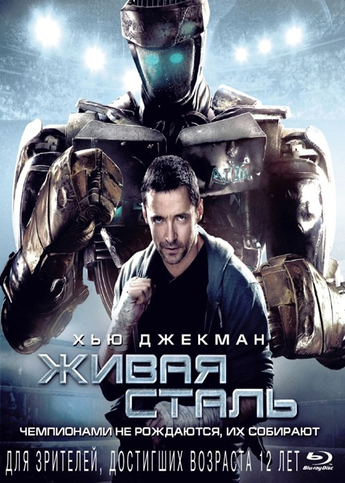
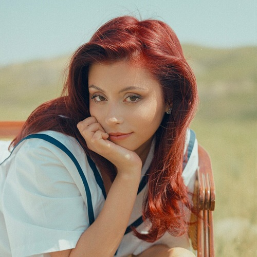
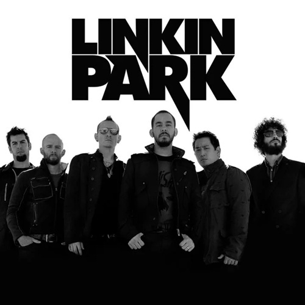
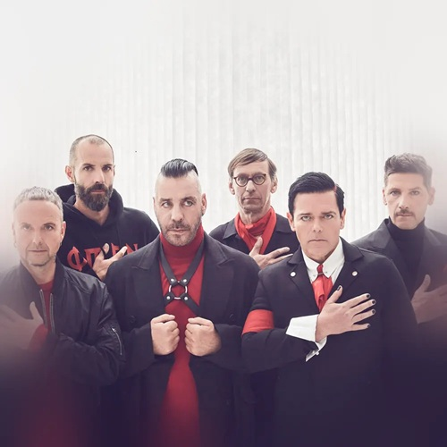

Мои увлечения
Компьютерные игры

Моё отношение к играм
Для меня игры — это скорее способ отдохнуть и переключиться после учёбы. Заходишь в игру и просто выпадаешь из реальности на пару часов. Нравится, когда есть сюжет, атмосфера, когда можно влиять на происходящее. Ну и просто приятно посидеть вечером, расслабиться и не думать ни о чём серьёзном.

Любимая игра
Если говорить о самой любимой игре, то это «Ведьмак 3: Дикая Охота». Огромный открытый мир, живые персонажи, нелинейные квесты — всё это создаёт атмосферу, в которую проваливаешься с головой. Прошёл обе сюжетные линии, все дополнения. «Каменные сердца» и «Кровь и вино» — отдельные шедевры, которые могли бы быть самостоятельными играми. Туссент — одно из самых красивых мест, которые я видел в играх. История Геральта закончилась, но эмоции остались навсегда.
Симрейсинг

Симрейсинг для меня
Симрейсинг — это не просто игры, а настоящий гоночный симулятор, где важны физика, настройки машины, анализ своих ошибок. Это способ почувствовать себя пилотом, не выходя из дома. Для меня это возможность прожить мечту стать гонщиком, пусть и в виртуальном мире.

Лучший симулятор
Гоняю в Assetto Corsa, LMU, но главное — iRacing. Это самый реалистичный автосимулятор из существующих. Да, графика у него устаревшая. Но iRacing славится физикой, которая максимально приближена к реальности. К сожалению это симулятор, который вытягивает деньги — подписка, трассы, машины, всё по отдельности. Но взамен ты получаешь доступ к лучшей онлайн-экосистеме и самой реалистичной физике в индустрии.

Макс Ферстаппен в iRacing
Четырёхкратный чемпион Формулы-1 Макс Ферстаппен тренируется в iRacing. Макс параллельно участвовал в виртуальных «24 часах Нюрбургринга»: ночью откатывал свои стинты(отрезки) в iRacing, спал 4 часа, а днём выиграл реальную гонку Формулы-1. Благодаря iRacing он настолько детально изучил Нюрбургринг, что за короткое время стал одним из лучших на трассе, где у него был минимальный реальный опыт. Вот что значит настоящий симулятор.

Настоящий Нюрбургринг
Ферстаппен не раз признавался, что iRacing помогает ему быстрее адаптироваться к новым трассам. Нюрбургринг — идеальный пример: минимальный опыт в реальных заездах, но благодаря тысячам кругов в симуляторе он сразу показывал топ-результаты. Именно за это симрейсинг ценят настоящие пилоты.

Foton и FatalVaska
Два сильнейших пилота, за которыми постоянно слежу. Оба много гоняют в iRacing и LMU, участвуют в топ‑лигах
и регулярно делятся опытом на стримах.
Foton — интересно рассказывает про оборудование.
FatalVaska — силён в командных гонках и эндурансах.
Учусь у него держать темп и тактике.
Формула-1

Как начал смотреть
Формулу-1 смотрю с детства — интерес привил отец. Помню, как по выходным включал гонки, он болел за Ferrari, а я постепенно втянулся. Сейчас это один из главных спортивных интересов.

Любимый пилот — Джордж Рассел
Болею за Джорджа ещё с 2018 года, когда он выступал в Формуле-2 за команду ART Grand Prix и выиграл чемпионат. Нравится его стиль пилотирования, уверенность и то, как он прогрессирует. В 2026 году он уже лидирует в чемпионате — на его счету победа в Китае и уверенное преимущество над соперниками. Чувствуется, что у него есть все шансы на титул, тем более сейчас у него быстрая и надёжная машина.

За какую команду болею
За Mercedes болею с 2016 года — тогда начал смотреть Формулу вместе с отцом. В 2026 году Mercedes выглядит очень сильно: новый болид W16 получил революционные изменения в аэродинамике, а на предсезонных тестах в Абу-Даби команда первой испытала активное переднее антикрыло. Сезон начали мощно: Рассел выиграл спринт в Китае, а в Австралии оба пилота финишировали на подиуме. Сейчас команда лидирует в Кубке конструкторов, и, надеюсь, это только начало.
Велоспорт

Мой велосипед
У меня Outleap RIOT EXPERT 29 — надёжный хардтейл, на котором я катаюсь по лесным тропам и по городу. Велосипед позволяет чувствовать себя уверенно на бездорожье, неплохо прощает ошибки и радует надёжностью. Люблю выбираться за город, особенно в тёплое время года — это способ отдохнуть от монитора и переключиться.
Космос

Космос — это то, что затягивает, если начать вникать. Мне кажется, будущее космонавтики за многоразовыми носителями и частными компаниями вроде SpaceX. То, что они делают с Falcon 9 и Starship, впечатляет. Слежу за новостями про запуски, планы по высадке на Луну и Марс. Было бы интересно увидеть, как космонавтика развивается дальше.
Программирование

Программирование для меня — это способ создавать что‑то прикольное. Нравится копаться в задачах, которые требуют логики. Python сейчас основное направление: боты, скрипты, автоматизация. Как работа оно меня не привлекает, а как хобби — интересно. В будущем хочу лучше разобраться в сетях и безопасности, но пока просто получаю удовольствие от процесса и учусь на своих ошибках.
Любимые фильмы

1+1
Аристократ-инвалид ищет сиделку и нанимает парня из неблагополучного района. Очень тёплая, смешная и жизнеутверждающая история о дружбе вопреки всему.

Волк с Уолл-стрит
Реальная история брокера, который построил империю на биржевых махинациях. Драйв, чёрный юмор и бешеный темп — фильм не даёт заскучать ни на минуту.

Зелёная книга
60-е годы, итальянец-вышибала нанимается водителем к чернокожему пианисту в тур по югу США. Дорожная драма о дружбе, расизме и музыке — очень душевно.

Интерстеллар
Земля на грани гибели, группа учёных отправляется через червоточину искать новый дом. Космос, чёрные дыры, любовь и наука. Считаю лучшей работой Кристофера Нолана.

Живая сталь
Будущее, где боксёров заменили роботами. Бывший боксёр и его сын находят робота-аутсайдера и идут к чемпионству. Полюбил в детстве за спецэффекты, которые заставляли думать, что это реальные роботы или очень реалистичные костюмы.
Любимые исполнители
СТИНТ
Российский стример из Иваново, который начал заниматься музыкой на заре своего творчества. Его треки «Игра», «Армагеддон», «Happy End» отличаются проработанной инструментальной частью и философскими текстами. А такие треки, как «Это не мой вайб», «Идиот», «Хрясь!» — драйвовые и заряжают энергией. Радует не только прямыми трансляциями, но и хорошей музыкой, под которую можно гулять вечером или гонять на симуляторе.

Дора
Российская певица из Саратова, её стиль называют «кьют-рок»: лёгкий вокал и гитарное звучание с поп-мелодиями. Мои любимые треки это «ЁК», «Осень пьяная», «Трезво». В текстах — истории про отношения и подростковые переживания. Люблю слушать, когда хочется чего‑то лёгкого.

Linkin Park
Американская рок-группа, смесь тяжёлых гитар, электроники и вокала Честера Беннингтона. Альбомы Hybrid Theory и Meteora стали классикой, а песни «In the End», «Numb» и «Breaking the Habit» знают многие. После смерти Честера группа взяла паузу, но в 2024‑м воссоединилась с новой вокалисткой и выпустила альбом From Zero. Хорошо заходит под настроение.

Rammstein
Немецкая индустриал-метал группа, главные «огненные» рокеры планеты. Их фишка — ритмичные гитарные риффы, мощный вокал Тилля Линдеманна и театральные шоу с пиротехникой. Тексты почти все на немецком, часто мрачные и провокационные. Хиты вроде «Sonne», «Mutter», «Du hast» стали узнаваемы далеко за пределами метал-сцены. Отличный вариант, когда хочется чего‑то мощного и атмосферного.
© 2026